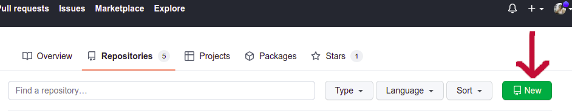
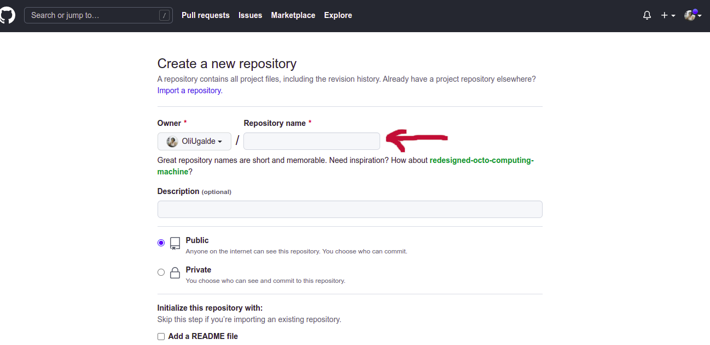
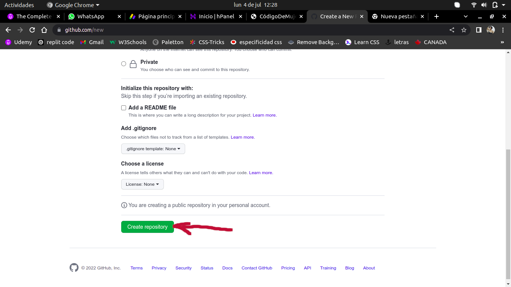
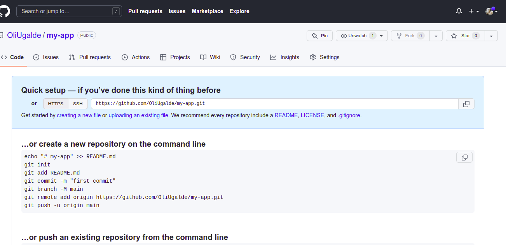
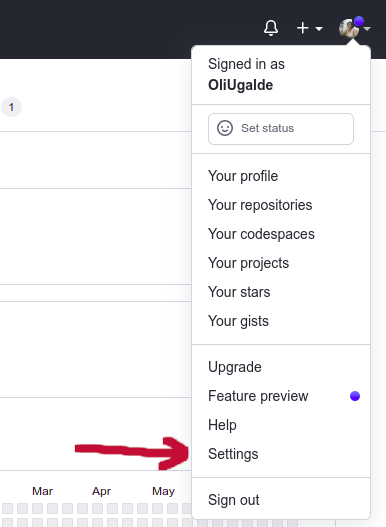
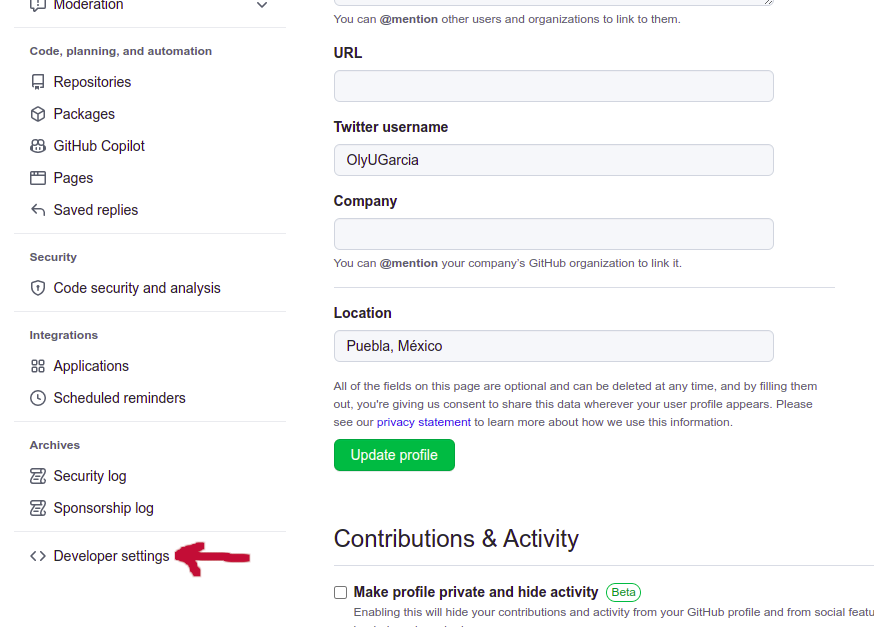
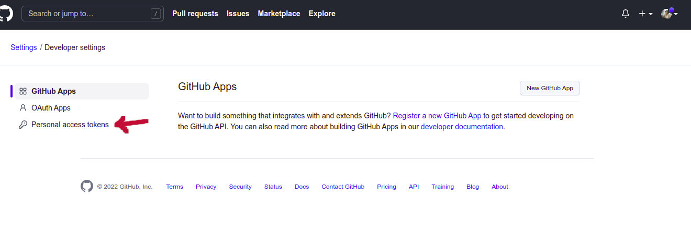
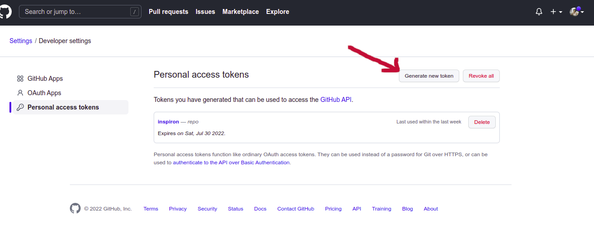
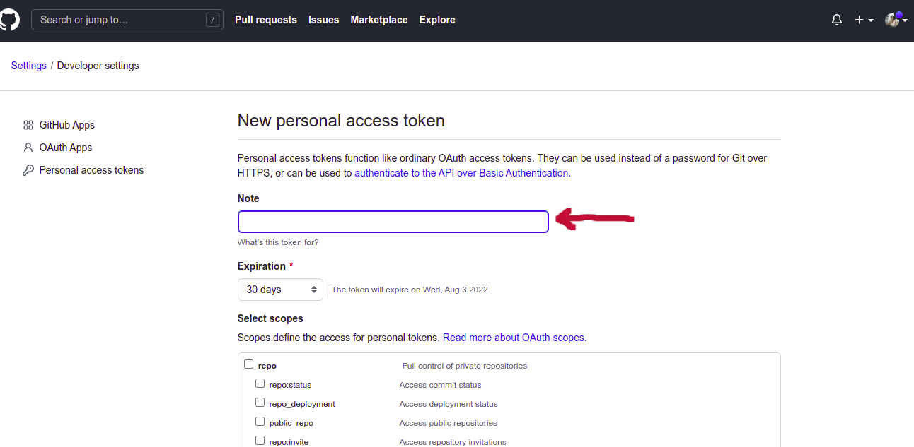
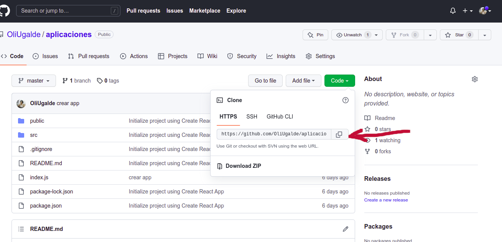

Codificar en proyecto React con Github
Como te darás cuenta, por estar la carpeta en otro usuario, no puedes acceder a la carpeta por medio de tu editor de texto, ya sea sublime text, visual studio code u otro, por lo que vamos a apoyarnos con Github, que es GitHub es una forja para alojar proyectos utilizando el sistema de control de versiones Git. Se utiliza principalmente para la creación de código fuente de programas de ordenador.
Obviamente vamos a requerir tener una cuenta en Github, primero te voy a decir lo que tienes que hacer en la terminal:
Vamos a ingresar a nuestra cuenta de github y vamos a presionar el botón NEW:
Posterior mente vamos a requerir nombrar nuestro proyecto:
Una vez nombrado el proyecto, vamos a oprimir el botón de crear repositorio:
Finalmente vamos a escribir el código que nos indica en la terminal
En la terminal, una vez que copiemos el ultimo comando, la terminal nos solicitará una contraseña, no es la de tu cuenta, es un token que debes general de la siguiente manera:
En el circulo que aparece en la parte superior derecha, vamos a desplegar el menu e irnos a settings
Una vez en Settings, iremos a la ultima opción que aparece en el menu de la izquierda, developer settings
En developer Settings vamos al boton de personal access tokens
De ahi vamos a presionar el botón de generar token
En donde dice note vamos a escribir el nombre de nuestro equipo, por ejemplo si tienes una computadora le puedes poner la marca o algún otro nombre con el que identifiques a tu equipo
Al final ya solo es apretar el botón generate token y listo, tu repositorio de git está completo, ahora solo deberás clonar el repositorio a la carpeta que en donde quieras tener acceso a tu proyecto
Ingresas a tu repositorio, oprimes el botón code y copias el vínculo que te aparece
Ahora, en tu terminal, dentro de la carpeta de tu computadora donde quieres que esté el proyecto de react, escribes:
git clone (copias el vínculo)
Listo, ya tienes tu proyecto react disponible para codificar con ayuda de Github